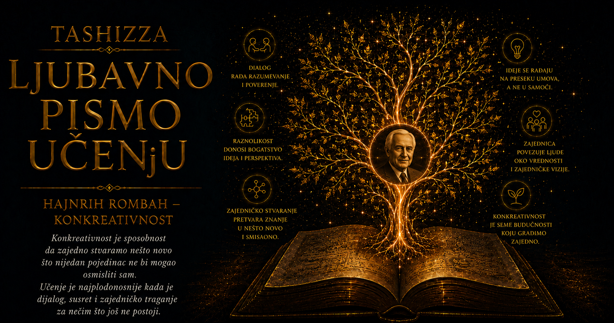

Ljubavno pismo učenju

Hajnrih Rombah pripada onim misliocima čiji se životni put može prepoznati u samoj građi njihove filozofije. Rođen je 10. juna 1923. godine u Frajburgu, gradu u kojem su se tehnička kultura, prirodne nauke i snažna fenomenološka tradicija nalazile neobično blizu jedna drugoj. Njegovo prvo obrazovanje bilo je usmereno prema tehnici: stekao je kvalifikacije iz mašinstva i građevinske tehnike, pa je svet najpre upoznavao kroz nacrte, materijale, proračune i konstrukcije. To rano iskustvo ostavilo je dubok trag u njegovom mišljenju, iako će kasnije upravo mehaničku predstavu stvarnosti smatrati nedovoljnom za razumevanje života, čoveka i slobode.
Njegova generacija nije imala priliku da mladost provede daleko od istorijskih lomova. Drugi svetski rat zahvatio ga je u godinama kada je tek trebalo da bira obrazovanje i životni poziv. Kao ratni vojni invalid dobio je mogućnost da već 1943. započne studije u Frajburgu, dok je rat još trajao. Okrenuo se fizici, matematici i hemiji, tražeći u prirodnim naukama zakonitost i pouzdanost u svetu koji je politički i ljudski prolazio kroz razaranje. Uz te predmete slušao je filozofiju, a susret sa pitanjima o smislu, biću, istoriji i granicama naučnog objašnjenja postepeno je promenio pravac njegovog života.
Frajburg je u to vreme bio jedno od važnih središta nemačke fenomenologije. Rombah je slušao Martina Hajdegera, Eugena Finka, Maksa Milera i Vilhelma Šilazija, mislioce koji su na različite načine nastavili razgovor započet Huserlovim istraživanjima iskustva i svesti. Od njih je učio da filozofija počinje pažljivim posmatranjem načina na koji se stvarnost pokazuje, ali je u rad donosio i obrazovanje čoveka naviknutog na konstrukcije, sisteme i prirodne procese. Spoj tehničkog, naučnog i fenomenološkog iskustva postao je prepoznatljiva osnova njegove kasnije filozofije strukture.
Doktorsku disertaciju posvećenu poreklu i suštini pitanja završio je 1949. godine. Već izbor teme pokazuje misaonu crtu koja će ga pratiti do kraja života. Pitanje za njega nije predstavljalo prazninu koju treba što brže zatvoriti odgovorom, nego događaj u kojem čovek prvi put otkriva da se nešto može videti drugačije. Dobro postavljeno pitanje menja onoga ko pita, jer mu pokazuje granice dotadašnjeg razumevanja i otvara prostor u kojem novi smisao tek treba da nastane.
Habilitirao se 1955. godine istraživanjem koje će kasnije prerasti u obimno delo Supstanca, sistem, struktura. U njemu je istoriju evropskog mišljenja pratio kroz tri velika načina razumevanja stvarnosti. U starijoj ontologiji prvenstvo je pripadalo supstanci, postojanoj stvari koja nosi svoja svojstva; moderna nauka i tehnika u prvi plan postavile su sistem, funkciju i međuzavisnost; Rombah je smatrao da savremeno iskustvo traži mišljenje strukture, sposobno da razume celine koje nastaju, menjaju se i iznutra razvijaju sopstveni oblik.
Takva ambicija bila je neobično velika za mladog akademskog filozofa. Rombah nije želeo da obradi samo jedan izdvojeni problem, nego da prepozna istorijsku promenu u samom načinu na koji ljudi opažaju svet. Njegovi rukopisi zato su povezivali filozofiju, prirodne nauke, umetnost, psihologiju, istoriju i svakodnevno iskustvo. Širina mu je omogućavala originalne uvide, ali ga je izlagala i prigovoru da veoma različite epohe i pojave ponekad okuplja pod jednim velikim obrascem.
Godine 1964. postao je redovni profesor filozofije na Univerzitetu u Vircburgu, gde je predavao sve do penzionisanja 1990. Njegovi seminari bili su važan deo filozofskog rada. Nekadašnji studenti pamtili su predavanja tokom kojih se činilo da misao nastaje pred njima, kroz pitanje, zastajanje, primer i zajedničko traženje odgovarajuće formulacije. Istraživanje i nastava prožimali su se toliko snažno da je seminar mogao postati začetak knjige, dok se objavljena knjiga vraćala u razgovor sa novom generacijom studenata.
Rombah je umeo izuzetno pažljivo da sluša. Prihvatio bi misao sagovornika, razvio njene mogućnosti i vratio je u obliku koji je delovao jasnije i snažnije od prvobitne formulacije. Student je mogao steći osećaj da je uz profesorovu pomoć tek otkrio šta je želeo da kaže. Posle toga bi Rombah počeo da proverava temelje iznete ideje, pokazujući skrivene pretpostavke i mesta na kojima argument više ne može da izdrži sopstvenu težinu. Njegova kritika bila je plodna, ali je za mladog čoveka ponekad mogla biti zasenjujuća.
Klaus Jakobi, jedan od njegovih učenika i kasniji filozof, ostavio je dragoceno sećanje na tu protivrečnost. Rombah je umeo da uzdigne tuđu misao, ali je njegova interpretativna snaga ponekad bila toliko velika da je sagovorniku ostavljala malo prostora za drugačiji put. Jakobi je opisao i učiteljevu osetljivost na kritiku, njegovu povređenost kada bi osetio da nije pravilno shvaćen i potrebu učenika da se udalji kako bi sačuvao sopstvenu samostalnost. U toj napetosti vidljiv je ljudski izazov filozofije koja slavi zajedničko nastajanje: dopustiti drugome da kroz susret poraste, a zatim prihvatiti da njegov put može krenuti u neočekivanom smeru.
Kasnija saradnja pokazala je i zreliju stranu Rombahovog odnosa prema tuđem radu. Kao urednik umeo je da odvoji filozofsko neslaganje od procene naučne vrednosti rukopisa. Razmatrao je jasnoću pitanja, doslednost argumentacije, kompoziciju, ozbiljnost istraživanja i način korišćenja izvora, a sopstveni stav prema autorovoj poziciji iznosio je odvojeno. Za mislioca snažnih uverenja takva disciplina predstavljala je važan oblik poštovanja prema istraživanju koje ne nastavlja njegov put.
Sa Filozofskim godišnjakom bio je povezan tokom gotovo tri decenije, od 1969. do 1997. godine, kao jedan od njegovih urednika. U časopisu su objavljeni brojni radovi koji označavaju ključne stanice njegovog filozofskog razvoja. Učestvovao je i u osnivanju Nemačkog društva za fenomenološka istraživanja, čiji je predsednik bio od 1972. do 1978. godine. I pored takvog akademskog rada, nikada nije stekao široku prepoznatljivost velikih imena nemačke filozofije dvadesetog veka, delom zbog zahtevnog jezika i sistema pojmova koji od čitaoca traži strpljivo ulaženje u čitavo kretanje misli.
Središnje delo njegovog filozofskog projekta, Strukturna ontologija: fenomenologija slobode, objavljeno je 1971. godine. U njemu je razvio zamisao stvarnosti kao živog procesa u kojem celine nastaju kroz odnose svojih činilaca. Sloboda je u tom okviru označavala sposobnost čoveka da u zatečenim okolnostima pronađe mogućnost autentičnog razvoja. Telo, jezik, porodica, istorija i društvo određuju početni položaj pojedinca, ali u sebi nose i puteve koji postaju vidljivi tek kroz pažljiv i stvaralački odgovor.
Rombah je posebno voleo primere trenutaka u kojima struktura „uspeva”, „otvara se” ili „probija” prema novom obliku. Takav događaj prepoznavao je kada se tokom rada iznenada pojavi pravo rešenje, kada razgovor prevaziđe početne namere sagovornika ili kada umetničko delo povede autora putem koji ranije nije mogao da predvidi. U tim trenucima ljudska sposobnost i okolnosti dolaze u odnos iz kojeg nastaje više nego što je bilo sadržano u prvobitnom planu. Iz tog dugog istraživanja postepeno će se oblikovati njegova filozofija konkreativnosti.
U Strukturnoj antropologiji, objavljenoj 1987. godine sa podnaslovom „Ljudski čovek”, pitao se kako osoba pronalazi sopstveni put unutar sveta koji je već oblikovan. Čoveka je razumevao kroz situacije, odnose i zajednice kojima pripada, uz očuvanu mogućnost da u njima razvije jedinstven način postojanja. Takav put nije zahtevao slavu ili izuzetno delo. Mogao se ostvariti u profesiji, partnerstvu, porodici, prijateljstvu, društvenom pokretu ili tihom načinu na koji čovek svakodnevno odgovara drugima.
Društvene pokrete svoga vremena pratio je sa posebnom pažnjom. Mirovne, ekološke i ženske pokrete posmatrao je kao pokušaje stvaranja novih oblika zajedničkog života, dok je istovremeno upozoravao da svaka živa inicijativa može vremenom očvrsnuti u organizaciju koja čuva sopstveni opstanak. Sistem je smatrao potrebnim osloncem, nalik kosturu živog tela, ali je njegovu vrednost merio time koliko služi razvoju života. Kada pravila, uprava i institucije počnu da postoje prvenstveno radi sebe, struktura gubi pokretljivost iz koje je prvobitno nastala.
Umetnost je zauzimala važno mesto u njegovom radu i nastavi. Sa studentima je odlazio u muzeje, uveren da slika može pokazati čitav istorijski način gledanja koji apstraktni pojam teško obuhvata. Umetničko delo za njega nije bilo ukras već oblik mišljenja, jer raspored prostora, svetlosti, pogleda i simbola otkriva svet određene epohe. U knjizi Život duha pokušao je da kroz slike prati temeljne preobražaje ljudskog iskustva, razvijajući filozofiju slike kao samostalni put razumevanja.
Iz tog interesovanja izrasla je oblast koju je nazivao hermetikom. Želeo je da sačuva iskustva čiji smisao ne može biti iscrpljen merenjem, klasifikacijom i tehničkom kontrolom. Pejzaž, mit, simbol, umetničko delo ili religiozno iskustvo mogu se proučavati, ali njihov značaj prevazilazi zbir proverljivih podataka o njima. Rombah je u takvim pojavama tražio trenutke u kojima čovek doživljava celinu sveta, iako je ne može potpuno zatvoriti u objašnjenje.
Njegova radoznalost vodila ga je i prema istočnoazijskim filozofskim tradicijama. Sa japanskim filozofima Koičijem Cudžimurom i Rjosukeom Ohašijem objavio je 1981. godine knjigu Biće i ništa: osnovne slike zapadnog i istočnog mišljenja. Posebno su ga privlačili taoistički motivi puta, preobražaja i delovanja usklađenog sa tokom stvari. U eseju Tao fenomenologije pokušao je da evropsku fenomenološku tradiciju otvori prema načinu mišljenja koji pojavu ne zarobljava unapred pripremljenom kategorijom.
Njegova dela naišla su u Japanu i Koreji na snažan prijem. Jeziku puta, otvaranja, događanja i žive celine bilo je lakše da stupi u razgovor sa istočnoazijskim tradicijama nego sa delom nemačke akademske filozofije usmerene prema analitičkoj preciznosti ili strogo ograničenim istorijskim istraživanjima. Rombah je u međukulturnom susretu video mogućnost da obe strane jasnije sagledaju sopstvene pretpostavke. Svaka tradicija zadržava svoje poreklo, dok kroz ozbiljno prisustvo druge otkriva mogućnosti koje sama nije razvila.
Njegova zrela misao dobila je najjasniji izraz u knjizi Poreklo: filozofija konkreativnosti čoveka i prirode iz 1994. godine. Poreklo je razumevao kao događaj koji se obnavlja svaki put kada iz susreta nastane autentično nov oblik. Ono se može pojaviti u umetničkom radu, naučnom otkriću, ljubavi, učenju, odnosu prema prirodi ili preobražaju zajednice. Čovek u takvom događaju deluje odgovorno i stvaralački, ali ne prisvaja čitav proces kao sopstveni proizvod.
Rombahov filozofski stil nosio je i hrabrost i opasnost velikih sinteza. Pisao je sa sigurnošću čoveka koji veruje da je prepoznao epohalni preobražaj, povezujući pojave koje su drugi proučavali odvojeno. Takav pristup omogućio mu je da prelazi granice akademskih disciplina i otvara neočekivane veze, ali je ponekad ostavljao utisak da jedan obrazac prebrzo proširuje na veoma različite svetove. Njegove omiljene reči — struktura, proboj, poreklo, otvaranje, put i nastajanje — nosile su uverenje da stvarnost sadrži više mogućnosti nego što navika ume da primeti.
Privatni život Hajnriha Rombaha ostao je oskudnije dokumentovan od njegove akademske karijere. Bio je oženjen Valtraud Bernauer i imao troje dece, dve ćerke i sina. Obe ćerke postale su muzičke pedagoškinje, pa su umetnost i obrazovanje bili prisutni i u porodičnom svetu bliskom njegovoj filozofiji. Doktorske kolokvijume ponekad je održavao u svom domu, čime se prostor svakodnevnog života otvarao prema razgovorima sa mladim istraživačima. Filozofija kod njega nije ostajala zatvorena u kabinetu; postajala je način slušanja, podučavanja i zajedničkog traženja misli.
Posle penzionisanja 1990. godine nastavio je da piše o prirodi, kulturama, društvenim sukobima, slikama i budućnosti filozofije. U knjizi Borba sa zmajem razmatrao je filozofsku pozadinu krvavih građanskih ratova i sila koje hrane zatvorene identitete i apsolutne slike sveta. Njegova poslednja knjiga objavljena za života, Svet kao živa struktura iz 2003. godine, sažela je višedecenijsko nastojanje da stvarnost opiše kao proces sposoban za razvoj, preobražaj i nov početak.
Umro je 5. februara 2004. godine u Vircburgu, u osamdesetoj godini. Iza njega je ostao filozofski opus koji se teško pretvara u kratku školsku formulu: strukturna ontologija, antropologija, dubinska fenomenologija, filozofija slike, hermetika i konkreativnost predstavljaju različite puteve prema istoj temeljnoj intuiciji. Čovek živi u svetu odnosa koji ga oblikuju, a ipak poseduje sposobnost da u njima otkrije i ostvari novu mogućnost.
Njegov život povezivao je tehničko obrazovanje i ratno iskustvo, prirodne nauke i fenomenologiju, evropsku metafiziku i istočnoazijsko mišljenje, univerzitetsku disciplinu i umetničku osetljivost. Iz tih susreta izrasla je nada da svet nikada nije potpuno završen. Svako ozbiljno pitanje, učenje, delo i ljudski odnos mogu postati mesto novog porekla, pod uslovom da čovek donese znanje i hrabrost, a zatim sačuva dovoljno pažnje da čuje mogućnosti koje mu stvarnost nudi.